A VR Application Providing Cinematic Experience
Jaunt Inc. is a company dedicating to provide next generation virtual reality cinematic experience. Jaunt VR is their VR movie distribution application, through which users can watch 360° movies and videos. It runs on all mainstream VR platforms including Oculus Rift, HTC Vive, Samsung Gear VR, Google Cardboard and so forth.
During my 2016 Summer internship at Jaunt as a UX designer, I was assigned to explore design patterns for virtual reality and bold new features to improve user experience of Jaunt VR.
UX Research, Interaction Design, Visual Design, Prototyping
Sketch4, Adobe Photoshop, Unity
May 2016 - Aug 2016
“A good VR cinematic experience” is a very abstract and general goal. From the perspective of the company, it’s important for us to know how to measure a good VR cinematic experience from the statistic view by objectifying and decomposing it into several specific reflections.
For Jaunt VR, we break down the general goal into the four key performance indicators(KPI), through which we believe can directly reflect the quality of the experience we provide users with.
Through the UX research, significant insights have been gained to leverage the experience of Jaunt VR. Together with the general development strategy and the vision of the company, we come up with a comprehensive solution for improving the experience from three aspects below.
Comfort turns out to be the fundamental to keep people in a VR application. Designing a virtual experience following the VR ergonomics causing the least discomfort is the first and foremost step.
Users think pure cinematic experience is just a one-time-off product and isolated experience. The most sticky experience always relates to social elements, which increase motivation of a single individual and create the sense of community.
Just the immersive video itself can not hold people’s interests for too long. Immersiveness makes users want not only passive watching but to interact with it, which also matches Jaunt's vision, to create interactive movie experience.
The Jaunt VR application consists of different scenes. Following the ergonomic guidance, I designed a new category lobby scene and redesigned the preview scene for Jaunt VR. The size and distance of all UI elements in the two scenes are decided by ergonomic calculation and rounds of user test. To maximize the iteration efficiency, the design progress of each scene follows a three-step process as follow.
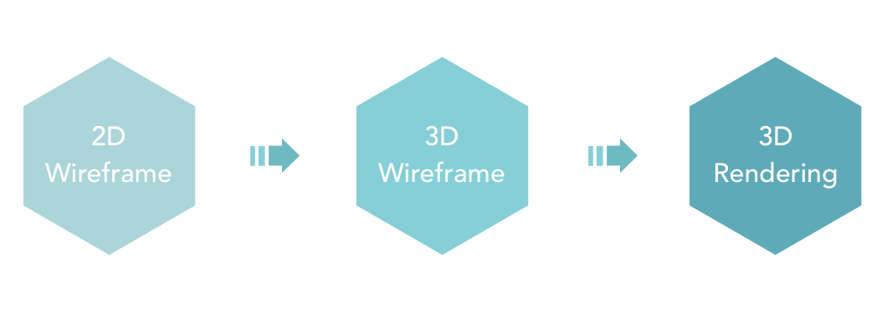In the stage of 2D wireframe, the basic information architecture and UI layout will be decided on paper in the form of wireframe. After that, we will build corresponding simple 3D user interface using 3D modeling tools, during which we will continuously adjust the size, distance and angles of all UI elements following the ergonomic rules through rounds of user test. In the end, a rendered scene with beautiful environment, color palette and textures will be made using both 3D modeling software and 3D game engine.
Category lobby is a scene designed to present the video category inventory, in which users can browse all categories of video and navigate among them.

Preview is the last scene before users entering playback. It provides details about a video including title, introduction, content rating and comfort rating.

Other than ergonomics, to bring in some social elements into Jaunt VR is a big part of my exploration. An isolated VR experience could suffer from low retention and the lack of stickiness. However, just like how we watch a movie in the theater, purely enjoying the content seems to naturally contradict interacting with people around you. Thus, introducing social elements becomes a tricky task. Even though, I decided to try an even bolder idea, to add social elements into playback by streaming emoji/comments of other audiences with the actual content. In order to create least distraction and most fun to the actual content, I did a lot exploration on the means of adding emoji/comments to VR video.

Emoji Streaming Exploration One
Emojis stream horizontally moving across the bottom area in a chronological order
.
Emoji Streaming Exploration Two
Emojis will appear in the area of interests, where they were placed by other audiences. Then they will move up and fade out.


Emoji Streaming Exploration Three
Emojis will appear in the area of interests, where they were placed by other audiences. Then they will move close to the audience and fade out.
Comments Streaming Exploration One


Comments Streaming Exploration Two
Comments Streaming Exploration Three

For interaction design, the first and foremost constraint is sources of input. However, back in 2016, most VR devices are cardboard-like headsets without controllers leaving gazing as the only input source. Following the bottom-up design principle, I provided some interaction solutions based on cardboard-like devices, which provide users an interactive VR movie experience by enabling them to interact with certain objects in a static scene.

Thumbnail Emoji Overlay
In the category lobby, when a user's gazing point hovers on the thumbnail of a video, the reactions from other users to this video will be shown and streamed as an overlay. (The Facebook emoji are just placeholders.)
Create Emoji Hotspot
For some static scene in a movie, a user can interact with a certain object in the scene by creating an emoji hotspot. (The shown gazing based interaction is the cardboard version of my design where user has no click button.)
 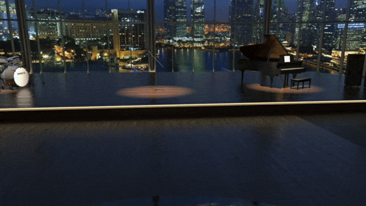
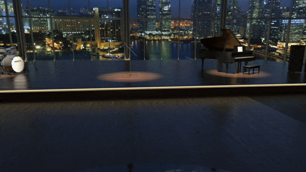
Discover Emoji Hotspot
In the scene, a user can discover the existing emoji hotspot and add their own reactions to the hotspot.
As a new media significantly different from 2D media, virtual reality has a very limited adoption rate among common users, which makes it even more significant for Jaunt VR to understand who the target users are. Based on the user data we have accumulated in the past, three principal personas are generated. The current target users of Jaunt VR tend to fall into one or more following characteristics: young group, technology saviours, movie/video lovers.
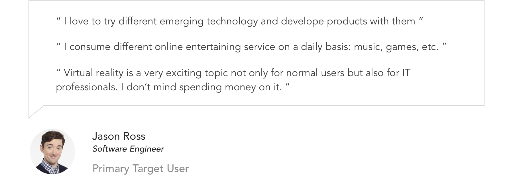 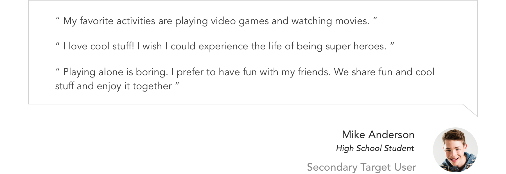 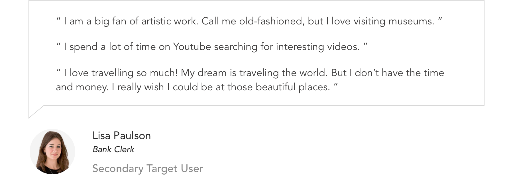As the hardware on which the Jaunt VR application runs, the VR devices in the market are increasingly emerging and changing. And different devices can be significantly different from each other. They have different display property, interaction input and degree of freedom(DOF). Since Jaunt VR runs on all mainstream VR platform, it’s important for us to have a good understanding of most VR devices and make sure we can provide as good user experience as possible for all of them.
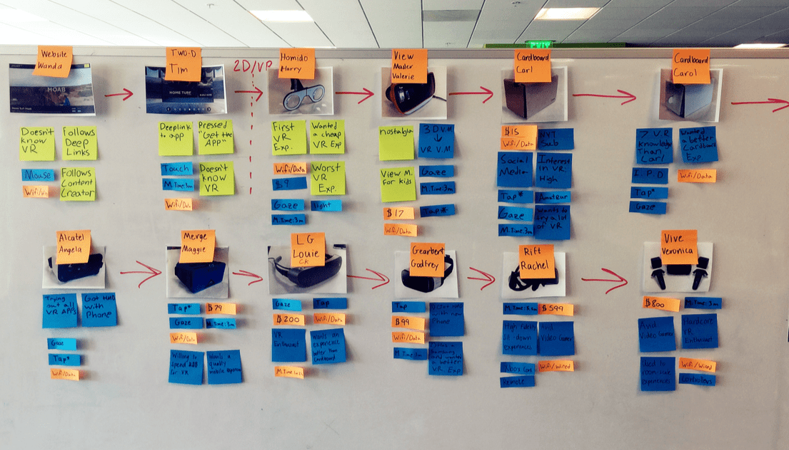 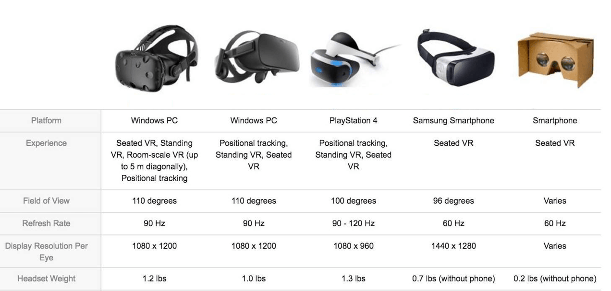Facing all of the significantly different VR device, we categorize them into several main types mainly based on interaction input. Then, we follow the bottom-up design principle, which is designing a basic version of our application referring to the lowest end VR headset (google cardboard), based on which we customize our application for different higher-end device. Because the lowest end device is also the most accessible and widely adopted device, thus the biggest market.
Ideally, in virtual reality, the user should be able to freely and comfortably explore the 360° virtual environment surrounding them, through which a strong immersiveness could be created. Normally, looking around is achieved through the combination of a person’s body rotation and head yawing.
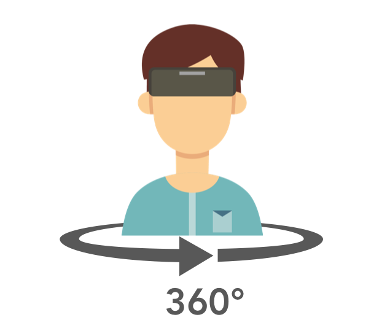However, in practical case, various constraints may not allow a user to comfortably make large movements.Thus, for use case in virtual reality, one of the most important factor differentiate one case from another is the movement freedom/comfort of the physical status the user is at. Because the movement freedom will directly influence a user’s intuitive behavior in virtual reality and bring up corresponding physical feedback. To understand our design constraints, we have to look into different use cases. Through our investigation, the use case of Jaunt VR are categorized into three types.
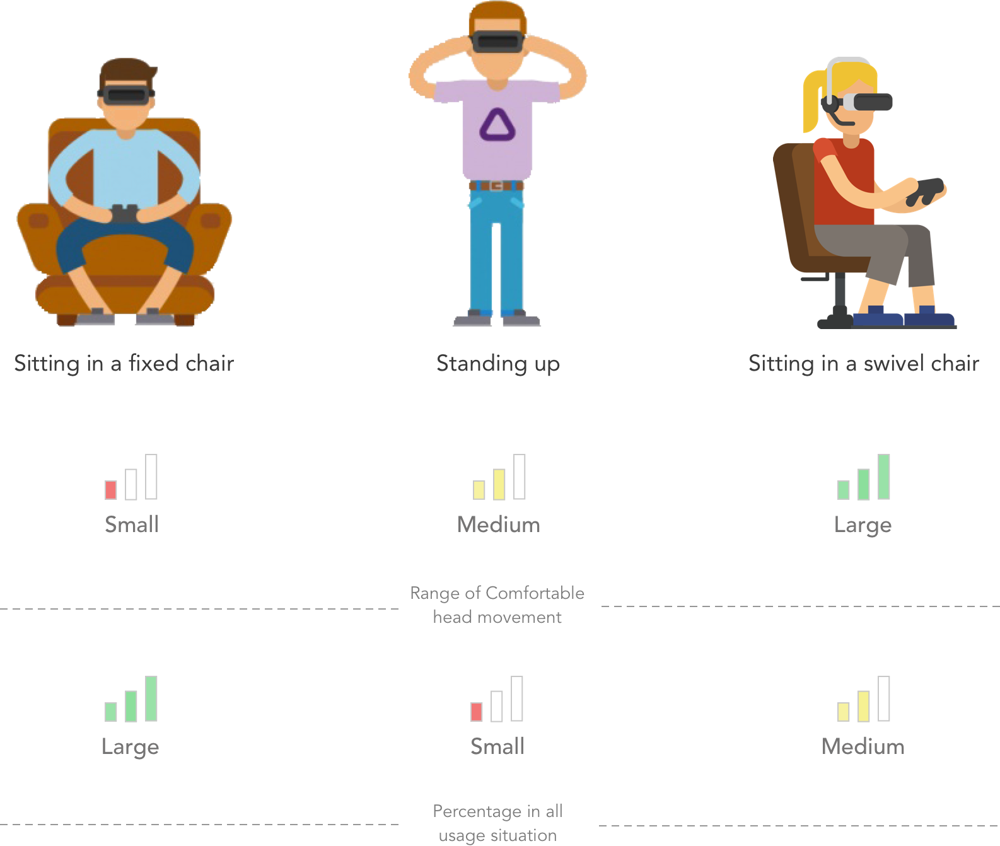Through use case analysis, we found that a large number of users using virtual reality applications suffering from a certain degree of movement constraints. For those with fewer constraints, it could still be exhausting to make too much movement. The meaningful insight we extracted from that is to wisely layout our user interface and reduce unnecessary movement of the user.
With the four metrics, different types of user research were conducted to understand the shortcomings of our current application and what user's needs and expectations really are. Given the limitation of quantitative research facing the complex UX problem of VR, we mostly rely on the qualitative research in our design process.
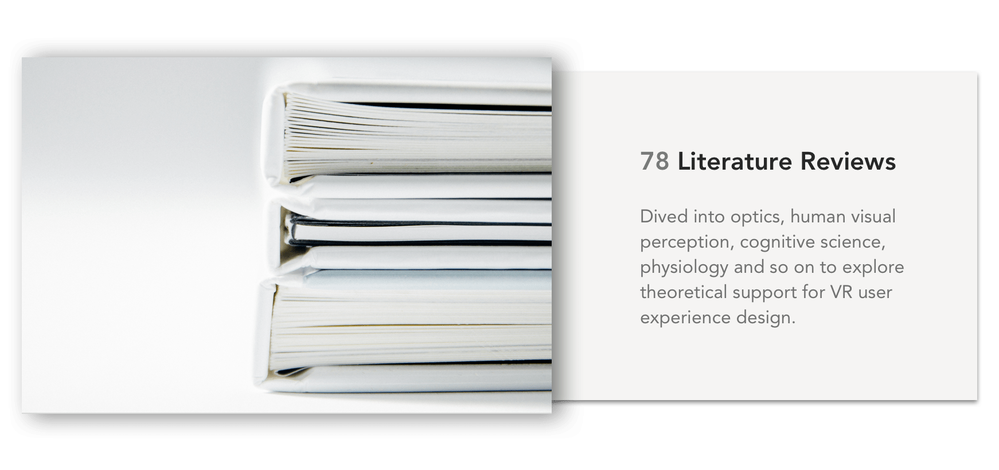 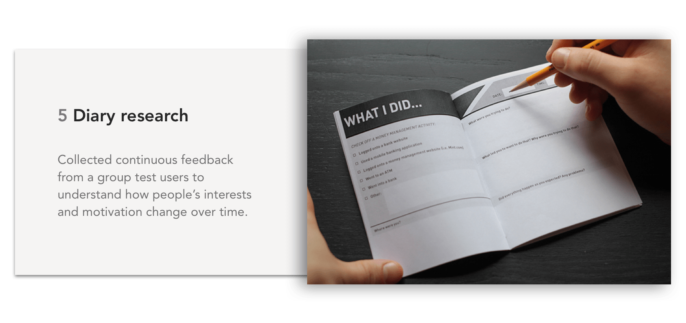 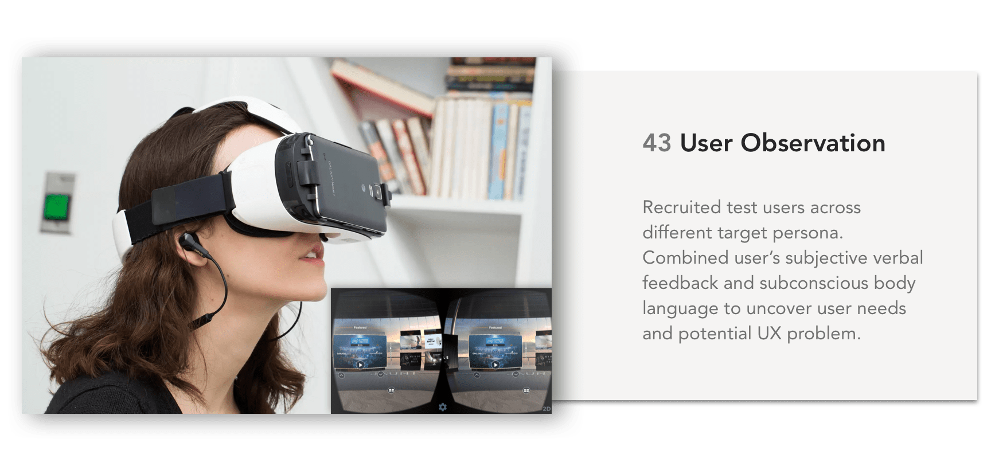 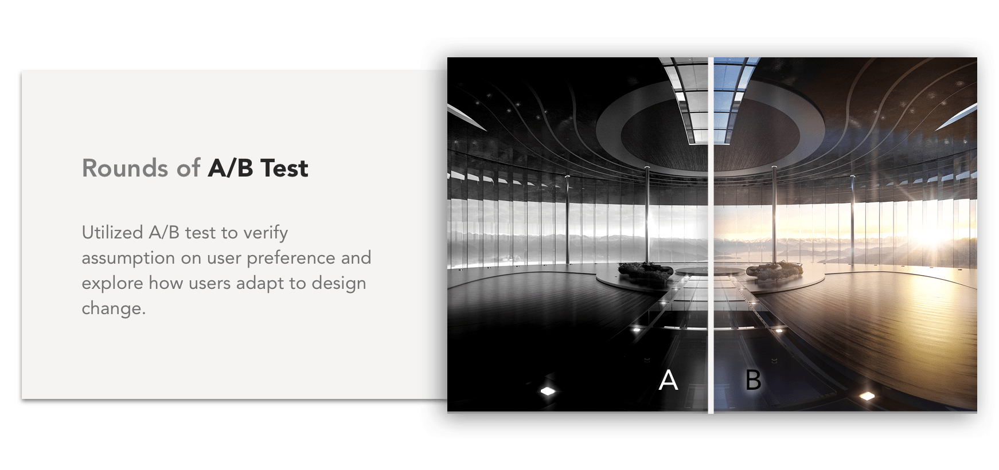Unlike traditional 2D design on the screen, virtual reality follows a very different user experience pattern called Spatial UX. In virtual reality, user’s experience is closely associated with ergonomical factors including: field of view, head movement range, canvas distance and UI size.
 Field of View (FOV) is the extent of the observable environment at any given time with a fixed head position. It directly decides the sense of presence and appropriate size of the user interface in VR.
Considering the various FOV of different VR devices, for the horizontal binocular FOV, it is safe to use an approximate average of 90° for design reference.
For most VR experience, usage of VR devices happens when sitting in a fixed chair. Thus, accommodating with the comfortable Range of Head Motion (pitch, yaw & roll) and prioritizing UI elements accordingly are significant to a comfortable and efficient VR experience.

Combining FOV and the comfortable range of head motion, we can get the Safest Area for VR design. Within the safest area, it takes least effort and keeps most comfort when users perform interaction in virtual reality. Thus, the most important and frequently UI should stay in this area.
As in 2D media, the size of text has to be carefully chosen to maintain its legibility. In VR, font size or the font height directly relates to its relative distance from eyes, pixels per degree (ppd) of the screen and the number of pixels you assign to the text.
Depth or the z index is an extra dimension introduced by virtual reality. Constrained by human visual structure, the range between 0.5m and 20m away from eyes are suitable for placing UI for a comfortable experience. Combining with FOV, head motion range, the diagram above could serve as a guidance for UI layout in VR.
*The ergonomic research results above are from Google Daydream team.

Document Center 2.0
Web & Mobile Design

Work Collection at Reside
Web & Mobile Design

Wanderful
Mobile AR Social Application

Samsung Health Motivation
Center
Cross Platform Fitness Application

VR Animals
VR Education Application

Magic Ideation
Mixed Reality Application

Access
Mobile Application

Jaunt VR
2016 Summer Internship